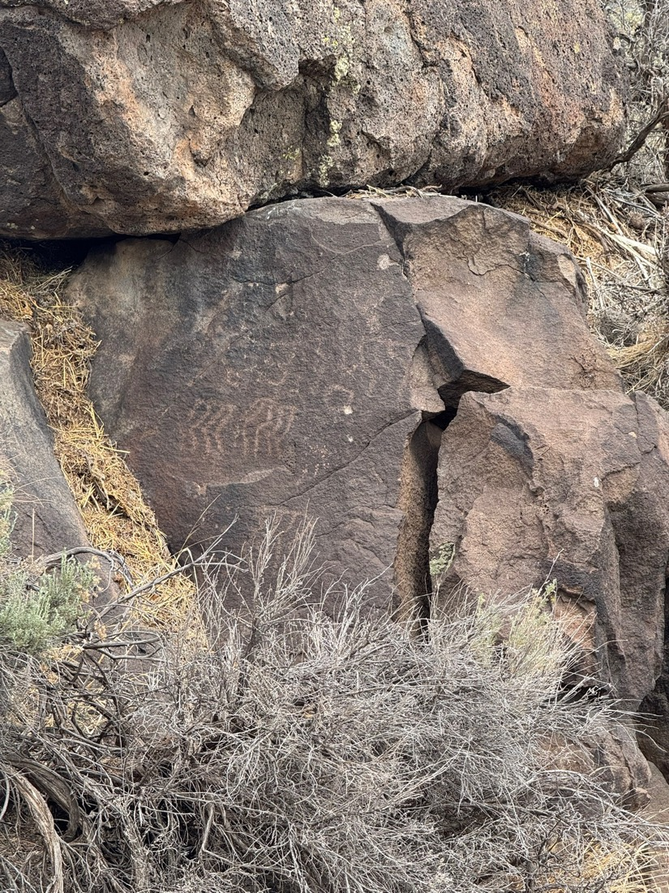
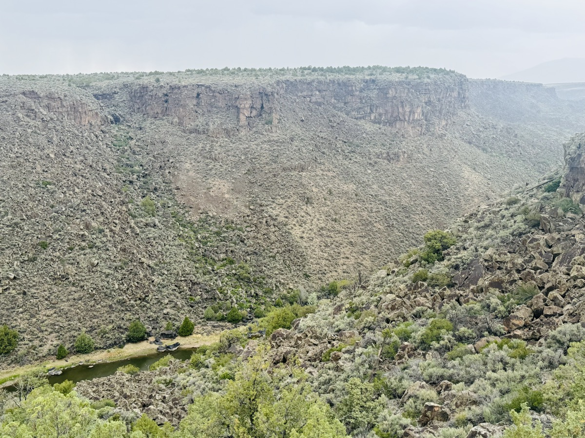

Water Beneath the Basalt
Written in Taos, NM, after a hike along Castilla Creek into the Rio Grande Gorge.

We hiked into the Rio Grande Gorge yesterday through Castilla Creek. The canyon walls are dark, fractured basalt: Pliocene lava flows that buried an older landscape and now frame one of the quieter freshwater stories of the American West.

The Taos Plateau sits near the northern edge of the San Luis Basin, part of the Rio Grande Rift. The basalt is not just scenery. It is a hydrologic membrane. Snowmelt from the Sangre de Cristo Mountains moves through alluvium, fractures, vesicles, and deep basin fill, feeding a layered aquifer system that is valuable, relatively clean, and not mapped nearly well enough.
That is the part that stayed with me. We have a first-order picture: shallow groundwater in alluvium and fractured basalt, deeper confined water in Tertiary basin fill, and a basin that may hold water unusually well. But the geometry, storage, recharge pathways, and seasonal changes are still poorly resolved.
There may already be a useful dataset. Around 2008-2010, the CREST seismic array operated across Colorado and northern New Mexico as part of EarthScope. It was built for deep Earth imaging, not hydrogeology. But continuous broadband seismic data can often be asked new questions. Ambient noise and dv/v methods might reveal shallow structure and seasonal groundwater changes retrospectively, especially when paired with USGS well records.
That is a paper waiting to be written.
The practical lesson is harder to ignore after walking through those canyons. Land over well-recharged aquifer systems may be undervalued relative to its future importance. There is a bad version of that idea: extractive water speculation. There is also a better one: conserving recharge zones, limiting harmful development, and holding water rights with restraint.
A geophysicist has one small advantage here. We are trained to care about what is hidden below the surface.
My kids saw the canyon, the river, the hawks, and the light on the basalt. That is probably the right way to see it first.
The inversion comes later.